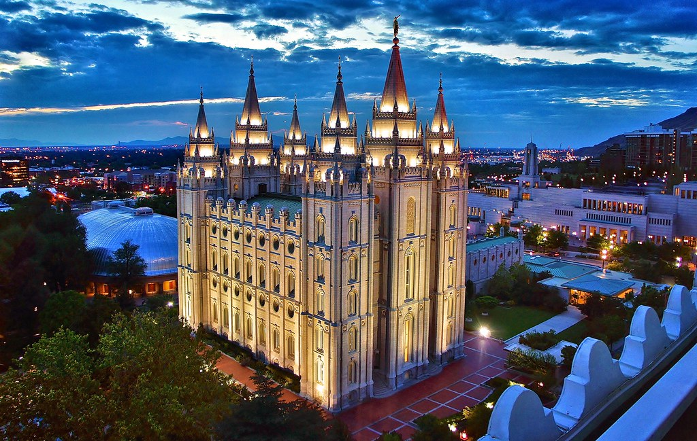

Welcome to Temple Inn and Suites!
The Salt Lake Temple is a temple of The Church of Jesus Christ of Latter-day Saints on Temple Square in Salt Lake City, Utah, United States. At 253,015 square feet (23,505.9 m2), it is the largest Latter-day Saint temple by floor area. Dedicated in 1893, it is the sixth temple completed by the church, requiring 40 years to complete, and the fourth temple built since the Mormon exodus from Nauvoo, Illinois, in 1846. The temple was closed in December 2019 for a general remodelling and seismic renovations that are anticipated to take approximately four years. (Wikipedia) Though this temple is currently closed, there are many temples that are open and we do hope that you will come visit one of our many locations.